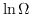
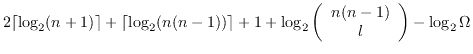

class BitRep implements Graph
{
BiDirectionalBitRep symmetrise() const;
bool operator()(i,j);
bool next_perm();
};
class BiDirectionalBitRep implements Graph
{
bool operator()(i,j);
bool next_perm();
};
class NautyRep implements Graph
{
bool operator()(i,j);
double lnomega() const;
NautyRep canonicalise() const;
};
These classes implement the Graph interface by storing the linklist as
a bitset. NautyRep specifically uses the bitset representation of the
Nauty package. One can freely convert between these types and others
implementing the Graph interface. All of these types support direct
setting/testing of the i,j th edge through the operator(i,j).
BitRep and BiDirectionalBitRep allow one to iterate through the permutations (thus cycling over all graph representations of a given edge count). This function returns false when no further permutations exist.
NautyRep has member functions for calling the Nauty library. If you
need both the lnomega and canonical representations, then it is more
efficient to call them at the same time via the ecolab_nauty()
function.
void ecolab_nauty(const NautyRep& g, NautyRep& canonical, double& lnomega, bool do_canonical);call Nauty on g, returning a canonical representation canonical and lnomega (). If canonical is not needed, then set
do_canonical to
false.
double canonical(BitRep& canon, const Graph& g);SuperNOVA canonical algorithm. Returns and canonical representation (which needn't correspond to that returned by Nauty).
double complexity(const Graph& g);Network complexity. If all links have the same weight, this corresponds to .